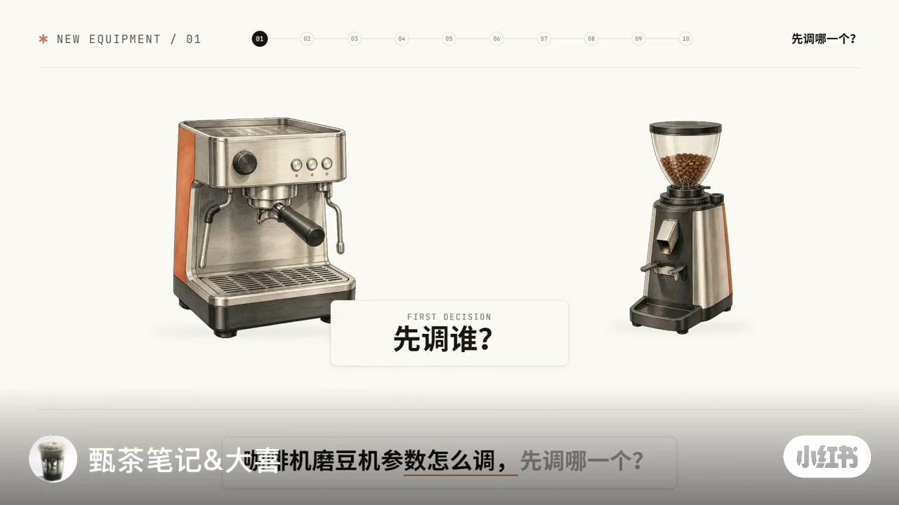
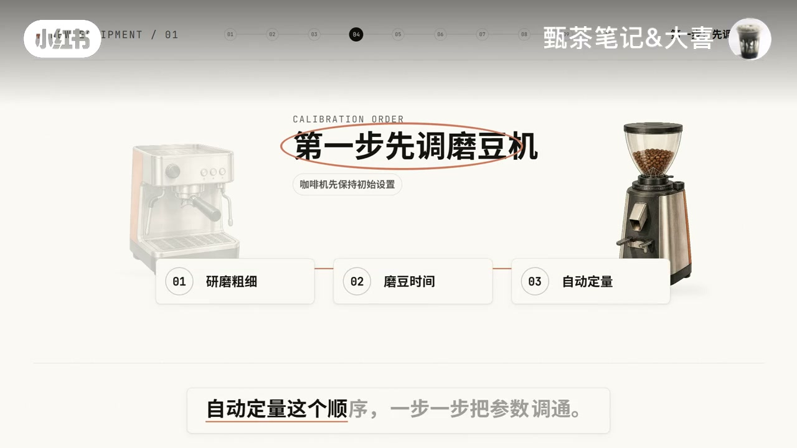
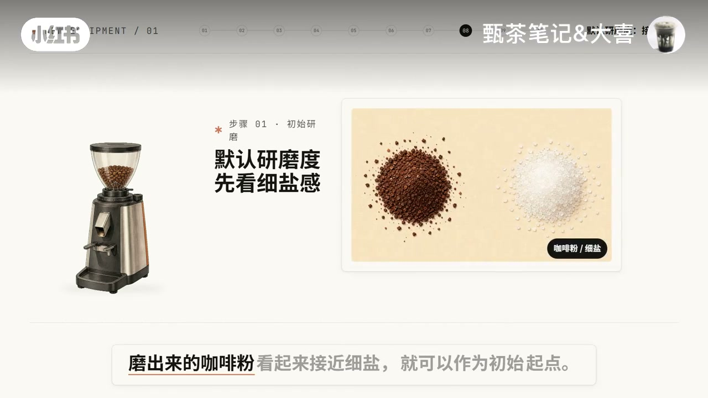
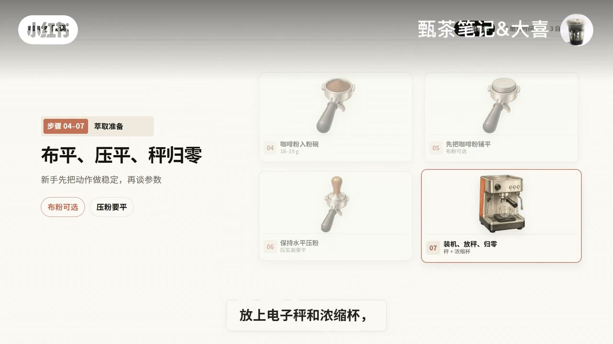
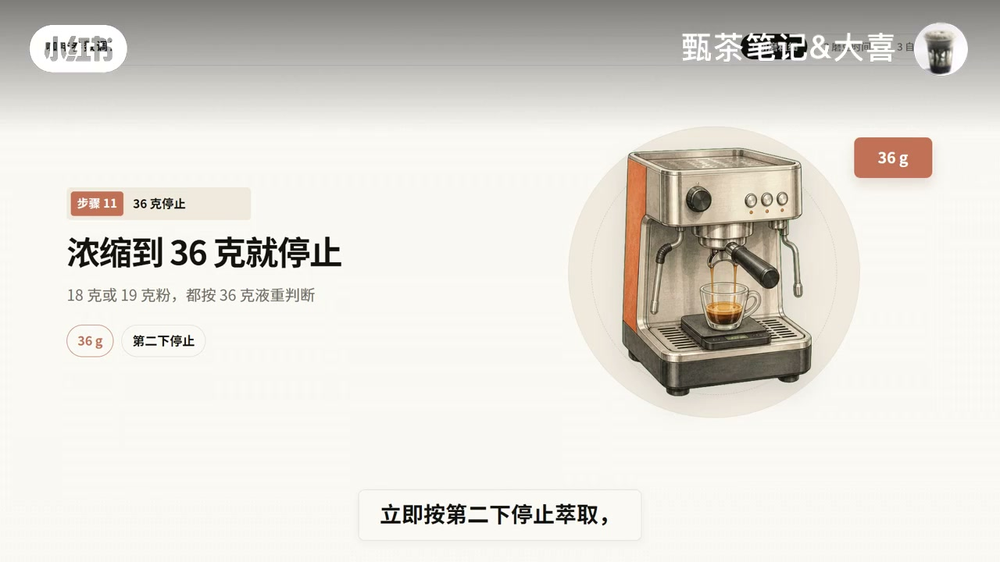
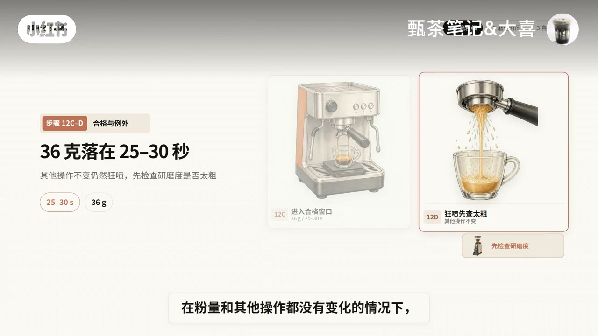
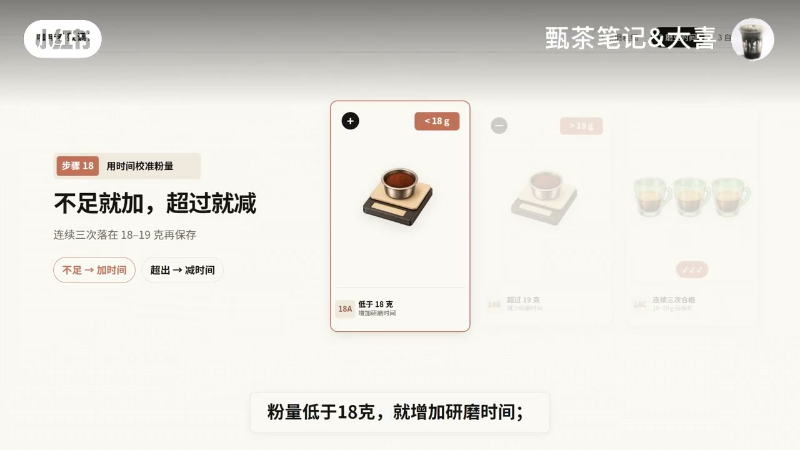
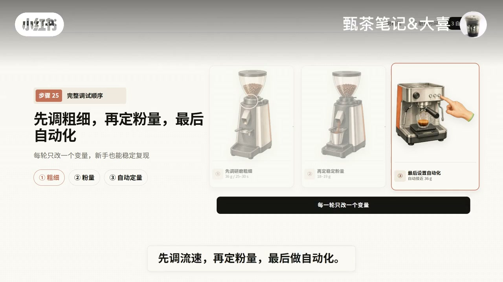

内容要点
这是一则意式设备调试教程：从「先调咖啡机还是磨豆机」切入，按粗细→时间→自动定量推进，并把计时起点、狂喷排查与入门参数边界讲清楚。
知识结构
咖啡机保持初始设置；顺序是研磨粗细、磨豆时间、自动定量，一步一步把参数调通。
机温约 91–93℃，压力/预浸/自动萃取量先不动；粉量 18–19 克，默认研磨先看细盐感，新手建议铺平再水平压粉并秤归零。
按键同时起计时，秤到 36 克停；快于 25 秒调细、慢于 30 秒调粗。改刻度后先排约 10 克残粉；大幅调细要「调一点、出一点粉」。
粗细钉死后不动刻度，改磨豆时间：不足 18 克加秒、超过 19 克减秒，连续三次稳定再保存。
计时定量只记秒数，设完必须复测液重；流量计定量通常更稳，长按到 36 克松开记忆，具体以说明书为准。
先调流速，再定粉量，最后做自动化。18–19 克 / 36 克 / 25–30 秒只是入门稳参，换豆后比例与时间可改，参数是起点、好喝才是结果。
新设备最重要的不是死记某个刻度，而是记住顺序：先调流速，再定粉量，最后自动化；每轮只改一个变量。
图文实录
开场三问：先调磨豆机
画面把咖啡机与磨豆机并排放上桌，中心只问一句「先调谁？」。口播连抛三个新手卡点：明明用了 18 克粉却像川溪一样狂喷；到底是粉量不对还是研磨度不对；萃取时间该从按下萃取键算起，还是等咖啡流出来才算。
随后给出整条链路：按研磨粗细 → 磨豆时间 → 自动定量，一步一步把参数调通。咖啡机侧的压力、预浸和自动萃取量，这一阶段全部先别动。


预热、工具与粉量准备
开始前先让咖啡机充分预热，口播给出温度约 91–93℃。材料清单很具体：同一款咖啡豆、双份粉碗、电子秤、浓缩杯和计时器；调试阶段每一杯都要称粉，也要称杯里的浓缩液。
磨豆机先用默认研磨度，粉体看起来接近细盐就可以当作起点——但「看起来差不多」并不等于已经正确，最后还是要用液重和时间来判断。粉量控制在 18–19 克，不能低于 18 克，且每轮尽量保持一致，方便前后对比。
布粉不是必须步骤，但新手为了提高稳定性，建议先把粉铺平，再保持水平压粉；手柄卡上机器后，放上电子秤和浓缩杯并去皮归零。


手动萃取：按键起计时，36 克停，调流速
调试阶段先用手动萃取键，不要碰还没设好的自动定量键。计时规则写得很死：按下萃取键的同时开始计时，不是等咖啡流出来才开始；机器没有读秒功能就用手机或单独计时器。
判定窗口：不到 25 秒就到 36 克 → 流速太快，研磨调细；超过 30 秒还没到 36 克 → 流速太慢，研磨调粗；落在 25–30 秒 → 粗细进入正常范围。回扣开场那杯狂喷：粉量和其他操作都没变时，应先检查是不是磨太粗。多数磨豆机数字越小越细、越大越粗，但型号可能相反，调整前先看机身粗细标识。
每次改研磨度后，默认先磨掉约 10 克粉丢掉，清掉通道里上一档残留，避免混粉干扰测试。若要大幅调细，不要一次拧太多——调一点、出一点粉，再继续调，以免咖啡豆顶住刀盘导致调节机构受力异常。每一轮只改变研磨度，粉量、液重和操作步骤全部保持一致；重复几轮，直到 36 克浓缩能稳定落在 25–30 秒。


粗细钉死后：用磨豆时间锁粉量
研磨粗细确定以后，先不要再动研磨刻度，接下来改磨豆时间——大多数磨豆机用时间控制每次出粉重量。可先设 3 秒：称重低于 18 克就加时间，超过 19 克就减时间；连续三次都稳定在 18–19 克再保存。
设置完成后，日常制作不必每杯都称粉，以提高出杯效率；但开机首杯、换豆、改变研磨度，或发现萃取速度变化时，仍要重新复称。

最后一步：设置咖啡机自动定量
粉量稳定后，才轮到咖啡机自定义萃取量。作者把定量方式分成两类：计时定量只记住机器跑了多少秒，并不知道杯里实际有多少克浓缩液，因此要按刚才稳定到 36 克所用的时间去设，设完还要重新放秤复测液重。
流量计定量通过流量计估算经过机器的水量，作者认为通常比单纯靠时间更稳定。常见做法是长按自定义萃取键开始萃取，秤到 36 克松开按键让机器记住；部分机型需要再按一次才能停止和保存——以说明书为准。连续两到三杯都能稳定接近 36 克，这个自动萃取键才算设完。
三问回扣：顺序优先于刻度
收束时把开场三问逐一答完：先调磨豆机；18 克粉仍狂喷且其他条件不变时先把研磨调细；萃取时间从按下萃取键开始算。等粗细稳定后再设磨豆时间，粉量稳定后再设自动萃取约 36 克。
最后提醒：18–19 克粉、36 克液重、25–30 秒，并不是所有豆子都必须照搬的标准答案，而是小白不知从哪下手时相对稳的入门参数——先把设备调稳定，再用味道做判断。换豆、换烘焙度或饮用方式后，合适的粉液比与时间都可能改变；进阶不是把数字卡得更死，而是根据品尝结果调整比例和时间，让这只豆子的风味更完整。
